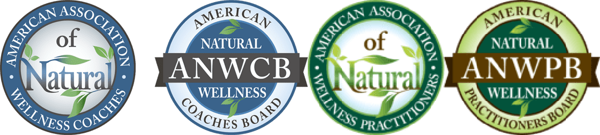

Rev. Dr. LaVeena B. Archers, PhD
Holistic Functional Medicine educator, teacher, and author, with a special focus on entrepreneur wellness.
LaVeena's work blends traditional healing, modern functional insights, and holistic lifestyle strategies, informed by Human Design. She is a 3/5 Human Design Projector Teacher, a Certified Executive Coach, and the author of Bad Medicine Blues, written from both sides of the exam-room table after her own long road through illness, dismissal, and the slow, unglamorous work of rebuilding her health from the roots up.
She has gone on writing since. The Muscle You Keep, on protein, muscle, and the GLP-1 medications for women over 40, came out of the same habit of going back to the trials rather than repeating what everyone says.
Her teaching operates within a Private Membership Association (PMA), a private, members-only framework. Read about joining the PMA.
If you have a question before going any further, the FAQ answers what people ask most often: scope of practice, the PMA, medical advice, and how to get started.

Doctor of Natural Medicine · Board-Certified Holistic Functional Medicine Doctor
My scope of practice
"My role is to educate and support, not to diagnose, treat, prescribe, or manage diseases."
LaVeena is not a medical doctor. Nothing on this site is medical advice, and no service here promises to cure or reverse any disease. Her work happens alongside, never instead of, your own medical care, within a Private Membership Association framework.
Credentials
LaVeena holds a Doctor of Holistic Functional Medicine degree from Kingdom College of Natural Health and the pentadoctorate from the Rockwell School of Holistic Medicine, and in 2025 she became a board certified Doctor of Natural Medicine, a Doctor of Holistic Functional Medicine, and a Doctor of Functional Nutrition by the American Natural Wellness Practitioners Board. Each of those three certifications required passing a board examination. That board is a private credentialing organization, and its certification is not state or federally regulated. Neither Kingdom College of Natural Health nor the Rockwell School of Holistic Medicine is accredited by an agency recognized by the U.S. Department of Education.
Degrees
- Doctor of Holistic Functional Medicine — Kingdom College of Natural Health
- Pentadoctorate — Rockwell School of Holistic Medicine
Board certifications
Awarded by exam in 2025 by the American Natural Wellness Practitioners Board:
- Doctor of Natural Medicine
- Doctor of Holistic Functional Medicine
- Doctor of Functional Nutrition
Also
- Certified Executive Coach
- 3/5 Human Design Projector Teacher

LaVeena is not a medical doctor. Her doctorates and board certifications are in natural medicine and functional nutrition. She is not licensed to practice medicine or naturopathic medicine in any state, she does not run a clinical practice, and she does not diagnose, treat, prescribe, or manage disease.
See every certificate in full — each one with its issuing institution and a plain note on what it is and is not.
What each credential covers
As a Doctor of Natural Medicine (DNM)
- Holistic assessments
- Nutrition education
- Herbal remedies and supplementation education
- Emotional alignment support
- Detoxification methods
- Frequency and sound healing
As BC-HFMD / BC-HFND
- Teaches you to understand functional lab results
- Explains biochemistry
- Mitochondrial support and metabolic optimization
- Natural nutritional and lifestyle adjustments
Work with LaVeena
Start with the book, or learn to understand your own lab results with professional-grade testing.
Get the Companion Workbook, free.
Join the reader list and I will send you the Companion Workbook and Quick-Start Checklist. Simple tools to turn what you are reading into daily practice, before you spend a penny on anything.